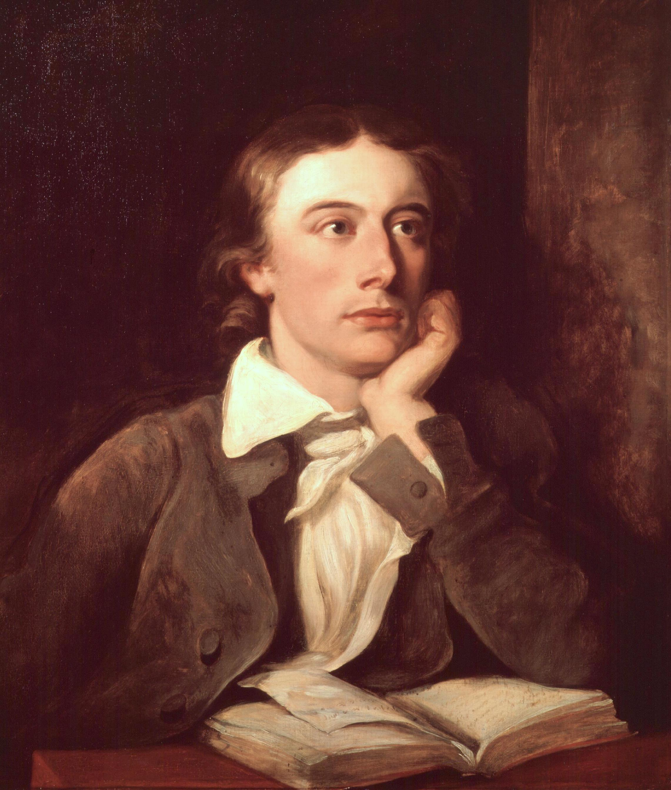
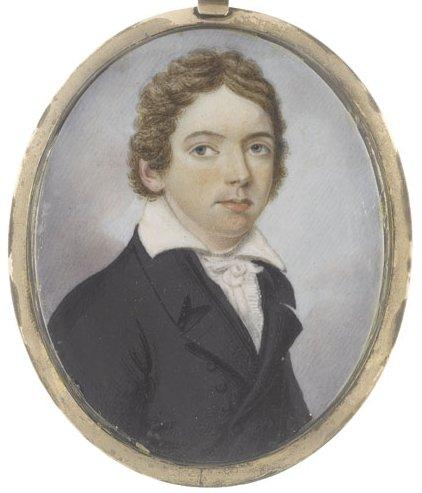
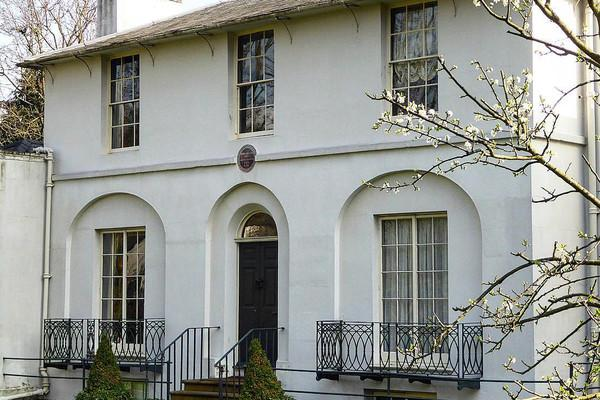
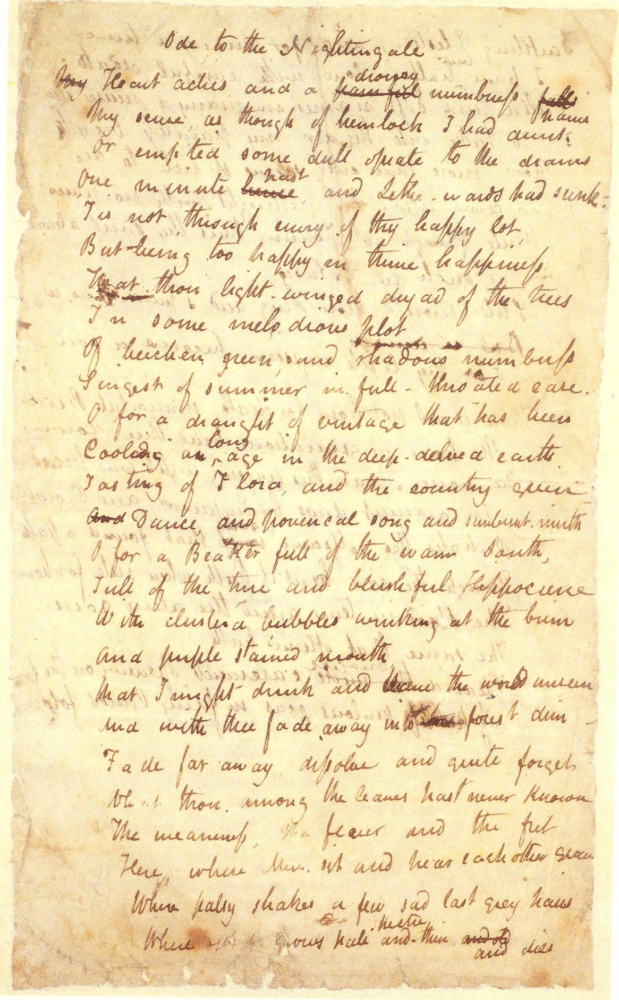

на главную страницу << >> English main page
>> English main page
Джон Китс
(John Keats, 1795 -1821)

Переводы, размещенные на других сайтах:
Куда ты спешишь, из Девона служанка?..
В душе боязнь, что вдруг меня не станет...
On the Grasshopper and Cricket
THE poetry of earth is never dead
Июль, жара, иссохшая река,
Умолкли птицы, звери норы ищут.
А из травы всё яростней и чище
Трещит кузнечик в гуще сорняка.
Зима, снега, который день подряд
Трещит огонь среди всемирной ночи.
А у огня всё радостней и звонче
Трещит сверчок - Поэт-Лауреат.
Перевел Яков Фельдман
СОНЕТ
Sonnet
When I have fears that I may cease to be
Я кажется скорей умру,
Чем передам себя перу.
Горою книги. В них черно
От букв, обильных, как зерно.
Ночное небо, всё в звездах,
Сквозь тени туч на нас глядит.
А я умру - мне никогда
За их игрою не следить.
О белокурый ангел! Час
Недолог твой! Не буду вновь
Вкушать, от страсти горячась,
Тебе не нужную любовь.
Успех пьянит, Любовь торопит.
Они в Ничто меня потопят.
Перевел Яков Фельдман
СОНЕТ
The day is gone, and all its
sweets are gone!
День ушёл, обжигающе грубый,
И увёл за собой отдохнуть
Сладкий голос и сладкие губы,
Удивительно мягкую грудь.
День растаял в объятиях ночи,
Растворился в объятьях её.
До чего же рука моя хочет
Осязать совершенство твоё!
Ночь густеет, сгущается тайна,
Простирает спасительный кров.
Урожай воспалённо-хрустальный
Собирает колдунья-любовь.
Отчего же мне так одиноко?
Я испил свою чашу до срока.
Перевел Яков Фельдман
Stanzas
IN a drear-nighted December,
Декабрьскими ночами
Блаженны дерева:
Они не помнят сами,
Как зелена листва;
Пусть Север негодует,
Промозглый ветер дует,
Придет весна - дарует
Им пышный цвет опять.
II
Декабрьскими ночами
Блаженны ручейки:
Они не помнят сами,
Как плещут пузырьки;
И взором Мусагета
Их льдинки не согреты -
Помнят, помнят лето
Едва ль: им сладко спать.
III
О, если бы так было
у юношей и дев!
Но чья душа не ныла
Сей путь преодолев?
Грядущее тревожит,
Кто скажет, кто поможет?
Увы! никто не сможет
Об этом рассказать.
Перевел Михаил Визель
M.Visel
ТЕБЕ, ЛЮБОВЬ
Hither, hither, love
Ближе, ближе, славная
В поле приходи,
Дай напиться сладкого
Из твоей груди
Радостный и разный
Стелет первоцвет
Где роса размазана
На коровий след
Близостью ответа
Заворожена
Солнечного света
Жизнь и жена
Быстрая награда
Сразу умирает.
Скорая отрада
Сразу улетает
Горькая услада -
Страсть недолго длится.
Страшная расплата
Близко, ох как близко!
Ближе, ближе, ближе -
Послан и спасен
Умирая вижу -
Удовлетворен.
Перевел Яков Фельдман
СЛАДОСТЬ ПРИВЕТСТВИЯ ГЛАЗ
Sweet, sweet is the
greetings of eyes
Прелестно глаз твоих сиянье
И голос твой не замолчал.
Ушло куда-то "До свиданья",
Давно состарилось "Прощай".
Влюбленных пальцев нервный трепет
И поцелуй горячий в лоб...
Мы над землей, но кто поверит,
Что не осталось ничего.
перевел Михаил Плущевский
M.Pluschevsky
A thing of beauty is a joy for ever
Красота не стареет во веки веков,
Что ни день - хорошеет она.
Пусть же будет наш сон величав и здоров,
Чтобы ей насладиться сполна.
А наутро мы снова сплетаем венок
Из растений, проросших во мгле.
Пусть привяжут нас свежие мак и вьюнок
К этой чёрной, тяжёлой земле,
Где под гнётом тоски, среди лести и лжи,
Мы блуждаем по тёмным путям.
Нас, наивных, ведут за собой миражи,
Подставляя зубам и когтям.
Но придёт красота и излечится дух,
И вольётся в движенье светил.
И барашек простой будет принят как друг
Деревами, что он посетил.
И речные кувшинки раскроют уста,
Где вода, как зелёный платок.
И прозрачный ручей для того, кто устал
Приготовит прохладный глоток.
В самой чаще лесной, где ни вешек, ни троп,
Брызги-капельки мускусных рос.
Это значит, что мир не торопится в гроб,
Не боится смертельных угроз.
Этот чудный, волшебный, живительный свет
Льётся к нам сквозь небесную грань.
Мы - не видим. не слышим, как шепчет вослед
Нам листва, освятившая храм.
Ты, бессмертного слова живая вода,
Ты, слепящий глаза окоём!
Вы должны быть, вы будете с нами всегда.
А иначе - мы просто умрём.
Перевел Яков Фельдман
On Fame
How fevered is the man who cannot look
Он не может на смертное время смотреть хладнокровно.
Знать, он вечностью болен и мучит его лихорадка.
Книгу жизни листает, дела свои видит подробно
И незрелых поступков листы выдирает украдкой.
Так бы роза хотела забыть о зелёном бутоне,
Или персик - лишить нас тоски о весеннем цветеньи.
Только прошлое время ушло, и его не догонишь.
И нельзя так достичь совершенства, а только смятенья.
Перевел Яков Фельдман
On Seeing the Elgin Marbles
MY spirit is too weak--mortality
Я слишком слаб; я ощущаю смерть;
Во всяком всплеске справа, слева
Мне слышится: "Ты должен умереть,
Больной орёл, глядящий в небо.
Но ты не должен плакать и рыдать,
Бранить заоблачные ветры,
Что их тебе отныне не догнать
Во свежем небе предрассветном."
.................
Так замыслы великого ума
Сердца открытые калечат.
Так Времени высокая волна
Смывает гений человечий.
Так смешивая сурик и кармин
Художник оживляет лица.
Так полутень Перикловых Афин
На холмах мраморных пылится.
Перевел Яков Фельдман
Один юнец противный
Сбежал на Север дивный -
Хотел мальчишка вредный
Понять народ соседний.
И там он узнал, что прозрачна вода,
И дверь деревянна, и почва тверда,
И всё это также как в Англии.
И красные вишни, и серый свинец,
И грустные вести приносит гонец.
У грустных историй счастливый конец,
И всё это также как в Англии.
И если рукою до носа достать,
И, вытянув шею, на цыпочки встать,
То снова окажешься в Англии.
Однажды сбежавший из Англии
Не может уже перестать.
Перевел Яков Фельдман
Ах, Одиночество! Уж если мы должны
Бродяжничать с тобой - на что нам грязный город?
Не лучше ли уйти в Музей Природы - в горы,
Где реки вниз текут с хрустальной высоты?
Я осторожен. Но прыжок Оленя
Спугнул Пчелу с открытого цветка.
Вот таинство. Душа моя легка
От этого столпотворенья.
Перевел Яков Фельдман
   
Знакомство с Ли Хантом и его кругом побудило Китса заняться литературой.
© 2001 Elena and Yakov Feldman